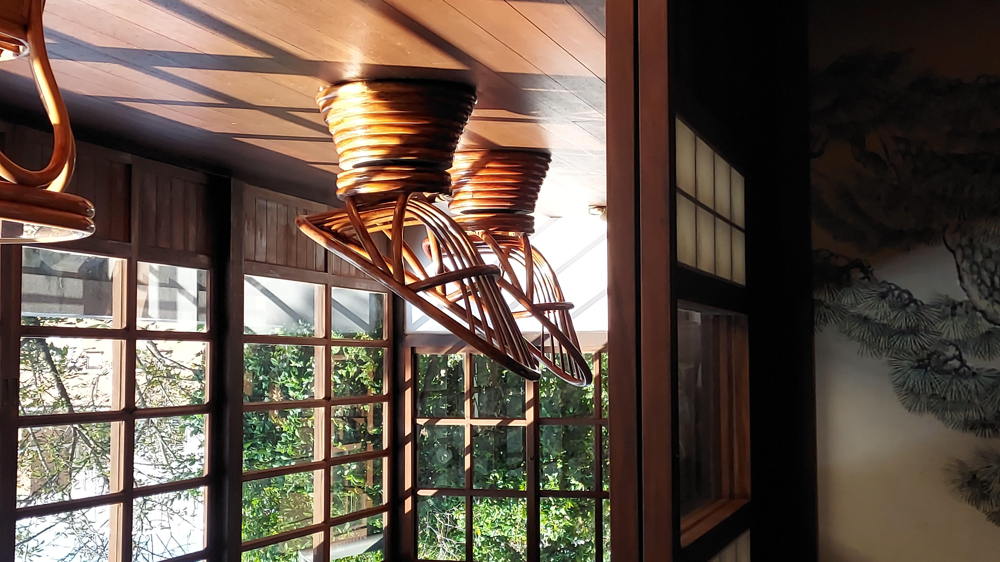
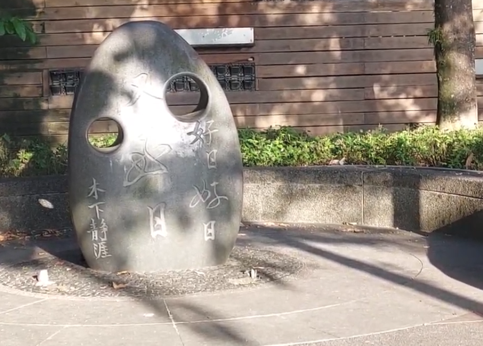

More
和洋折衷的警官住所
建於 1920 年，原本是提供高階警官居住的宿舍，戰後成為淡水警察分局局長宿舍，期間歷經多次改建。木造屋身、日式廊道與小庭院，是拍照與感受昭和生活的好地方。
兩處古蹟皆可免費入館
兩處相距不遠，可一起走訪
各停留 40 分鐘即可

建於 1920 年，原本是提供高階警官居住的宿舍，戰後成為淡水警察分局局長宿舍，期間歷經多次改建。木造屋身、日式廊道與小庭院，是拍照與感受昭和生活的好地方。
地址新北市淡水區中正路 12 巷 5 號
開放平日 9:30–17:00，假日 9:30–18:00

日本畫家木下靜涯曾居住於此。老屋修復後成為展示他生平與創作的空間，一樓長廊的小動物裝飾是修復時的巧思，旁邊石碑刻著他的名言。